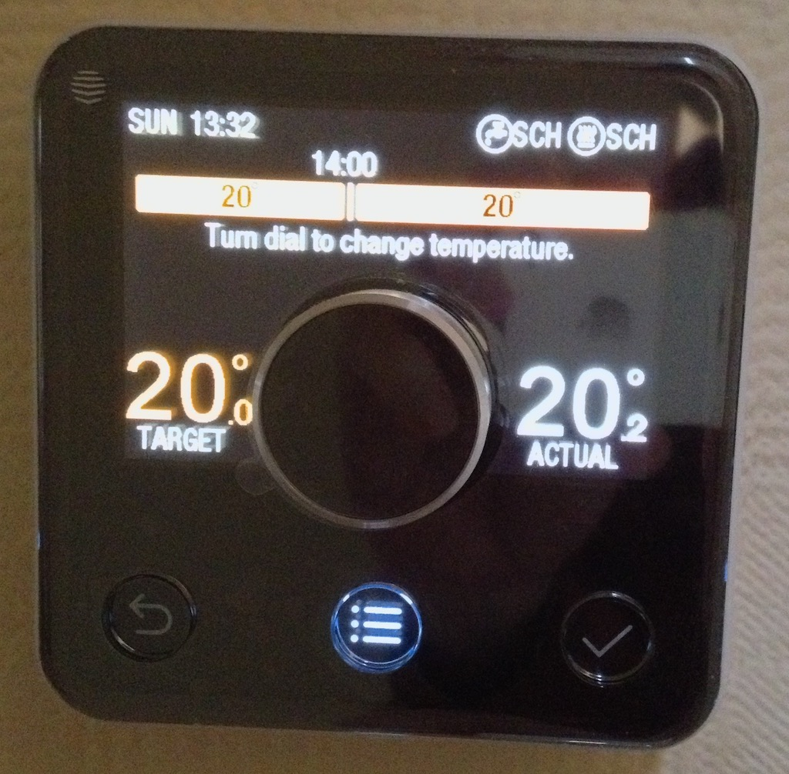
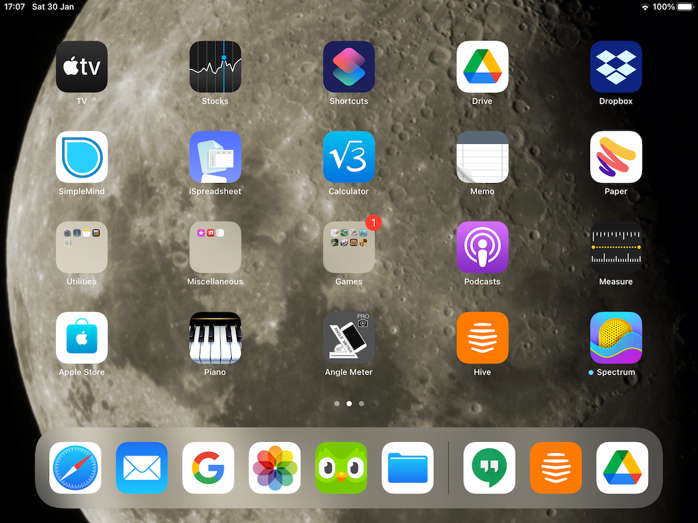
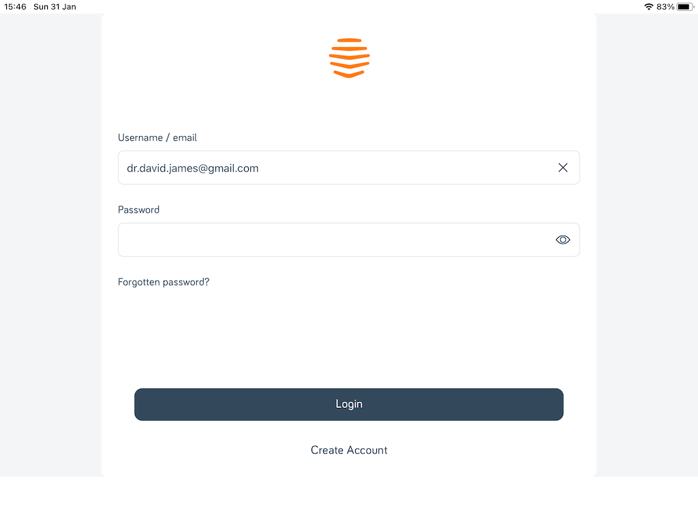
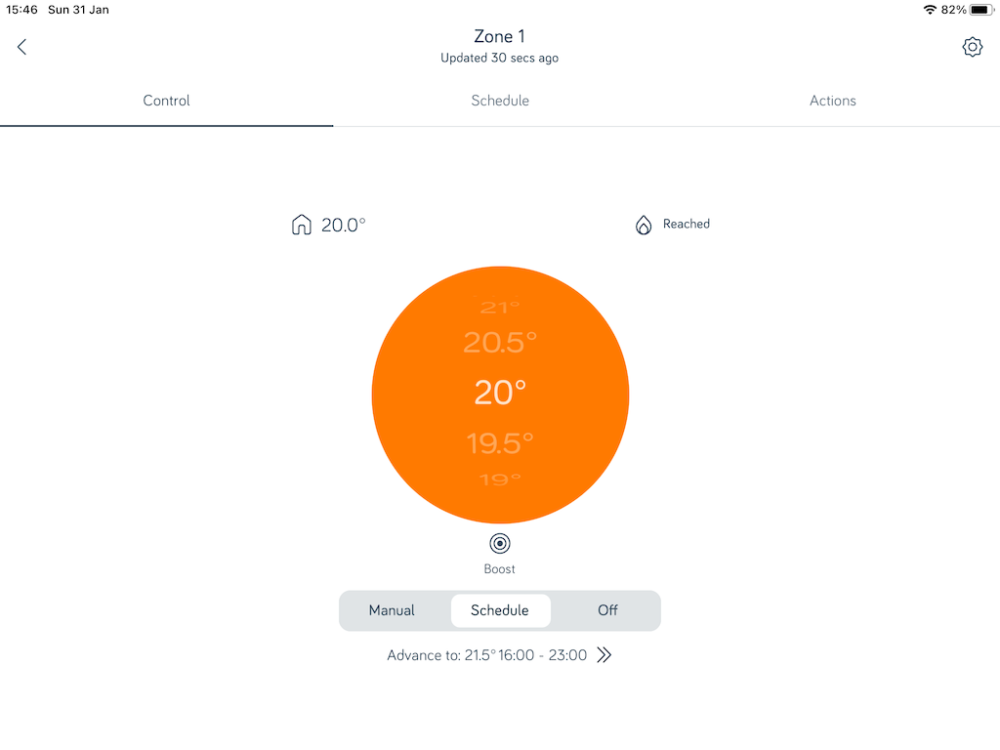
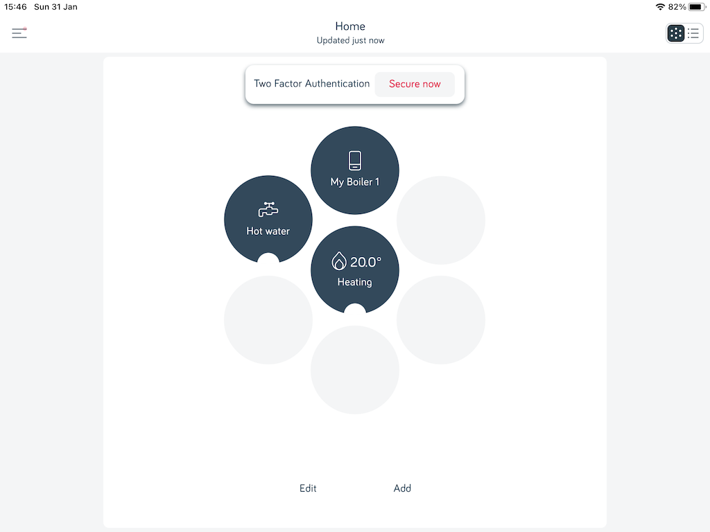
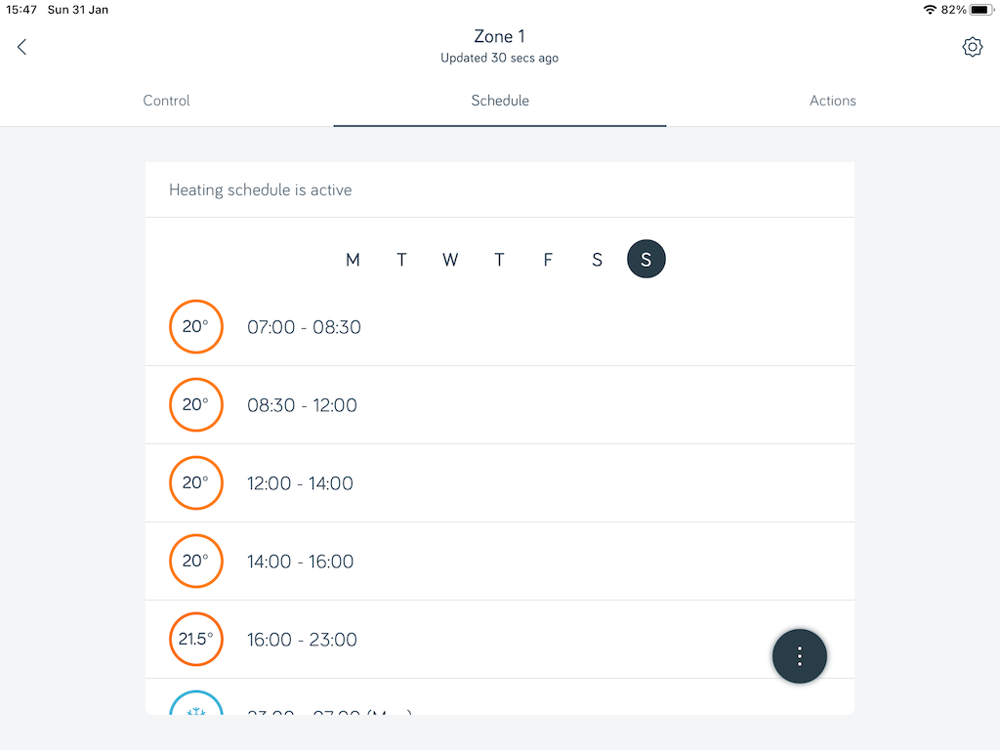
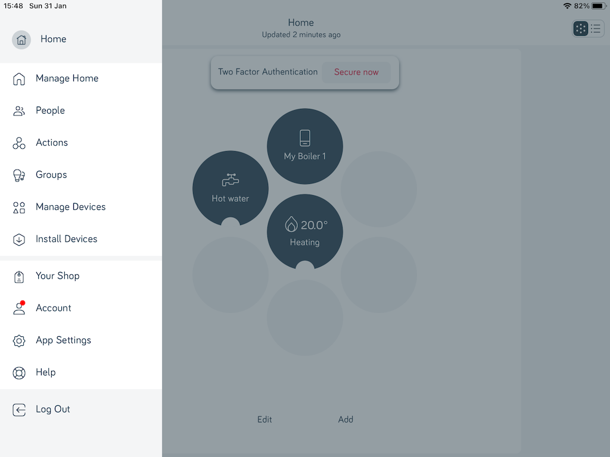

The thermostat in the hall communicates with the boiler in the kitchen using some form of wireless technology. If you press the central knob on the thermostat it will show the current temperature and the desired temperature that has been set in the programmed schedule. You can twist the knob to move the desired temperature up or down and that temperature will be used until the end of the current schedule period.
In fact you can adjust the scheduled programme for both the water heating and the central heating from the thermostat by pressing the 'menu' button in the middle at the bottom. However, it is a lot easier to use the Hive application on the iPad. You see, the boiler (and therefore the thermostat) also has a wifi connection to the router. So in principle you could change the settings from anywhere in the world that has an internet connection.
The app on the iPad can be found on the second page (just swipe to the left). It is the orange one that looks like a bee hive. Just tap it to get the login screen.
Of course, you will need to find the user name and password, but there is another 'how to' that describes that. Once you have logged in you will get the start screen from where you can tap on the boiler status, the hot water state and the centra heating state.
 The latter will show you the current target temperature, but if you tap on the Schedule tab you get a display of the times and temperatures for each period of the day. You can see that you can select any day of the week, although they are currently all set to be the same. You can tap on a temperature to change it or you can tap on a time to change that. If you want that change to apply to other days then you can tap the black circle with the three vertical dots to open a menu that allows you to copy the day's settings to other days. You can of course, do exactly the same with the hot water settings, which are currently set to heat the water in the morning and then in the evening.
When you've finished you can return to the home page, tap the menu icon at the top right and then tap Log Out.
© David James 2021 Last updated: 3rd February 2021